Learning Modes
Everything starts from one sentence at the top of the screen. Each colored word is a dropdown; changing one rewrites what the fretboard shows.
The sentence header
The header reads as ordinary prose and every highlighted word opens a picker:
I want to learn scales in E Major.
| Word | Choices |
|---|---|
| learn / identify | The verb picks what the app is for right now — showing you something (learn) or naming something you play (identify). Switching to identify keeps your learn mode and its chord where they were, so switching back returns you there. The key is shared: change it in identify and learn follows. |
| Mode | Scales, Chords, Triads. |
| Root note | All twelve notes, spelled the way the key is written — F Major reads B♭, not A♯ — until you pick Sharps or Flats on the marker display bar, which then wins in every key. |
| Scale type | Major, Minor, Pentatonic Major and Pentatonic Minor lead the list; the rest follow under a More scales heading — Blues, which is free, then Dorian, Mixolydian, Phrygian, Lydian, Locrian, Harmonic Minor, and Melodic Minor, which need Pro and show a lock. In identify it is one flat list, with no heading. |
| Chord | In Chords mode, and optionally in Scales mode, a chord picker backed by the Chord Atlas. |
| Triad type | In Triads mode, in place of the scale: Major, Minor, Augmented, Diminished. It names one triad on the root, not a key. |
In a wide window the sentence reads as one line, and scrolls sideways if it runs longer than the window. In a narrow iPad window it wraps onto a second line, or a third, the way text does. In a short one, where the neck needs the room, it folds into a summary in the top bar — just its subject, such as E Major — and tapping the summary opens the whole sentence, every dropdown live. On the Mac the header is always one line.
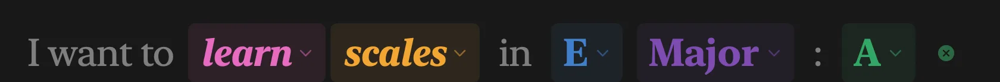
Scales
Purpose: learn a scale across the whole neck in any key.
What you pick: a root note and a scale type — twelve scales in total, covering the major and minor scales, both pentatonics, the blues scale, five modes, and harmonic and melodic minor.
Free or Pro: Major, Minor, both pentatonics and Blues are free. The five modes, harmonic minor and melodic minor are Pro.
On the fretboard: every note of the scale is marked. The scale timeline above the neck lays the twelve semitones out in a row so you can see the shape of the key itself. Below the neck, Visual Groupings let you overlay CAGED shapes, the scale’s five position boxes and three-notes-per-string patterns — one at a time, or all together.
Adding a chord: Scales mode has an optional chord slot at the end of the sentence, reading a chord until you fill it: “I want to learn scales in E Major: a chord.” Tap it to pick a chord from the Chord Atlas and it becomes the key's context — the scale timeline gains a chord rail and a Chord transport, and the Atlas follows it. It deliberately leaves the fretboard alone: in Scales mode the scale is the subject, and a chord tone drawn louder than its neighbors answers a question you did not ask. Clear it with the ✕ beside the chord, or Clear chord in the Atlas, to go back to the scale on its own. Changing the key root or the scale removes it too, and it is not kept when you quit. To see a chord's tones marked on the neck, switch to Chords mode.
Use it to: learn one key thoroughly, then switch on Box Shapes or CAGED to see how the patterns you already know line up inside it.
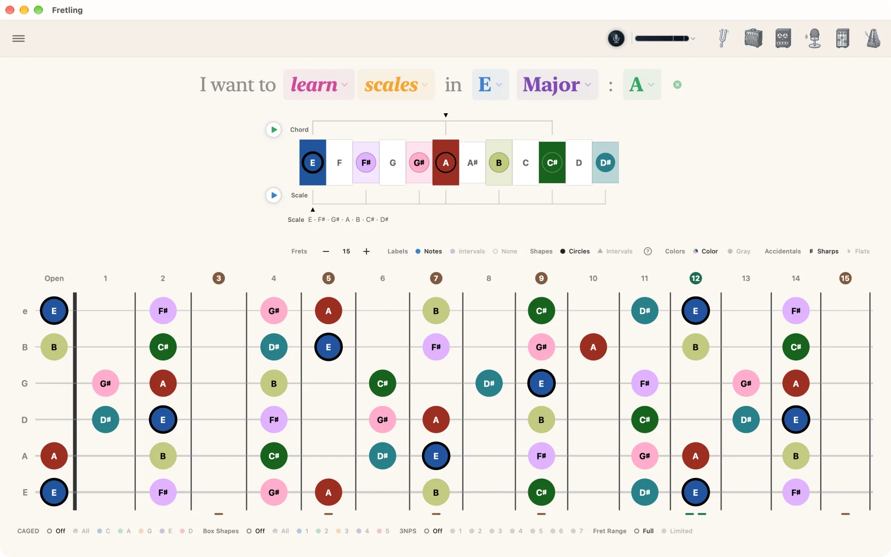
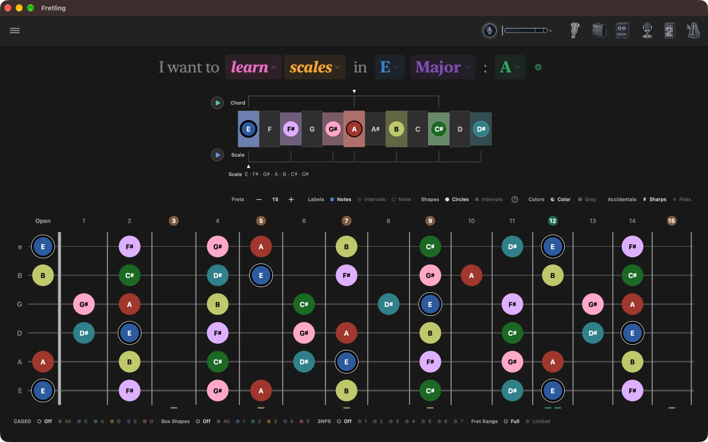
Chords
Purpose: explore the chords of a key and see where each one sits on the neck.
What you pick: a chord, and the key it is read against. The sentence puts the chord first — “I want to learn chords: Am in C Major” — and the chord's name is the button that opens the Chord Atlas, a catalog of 57 chord types on all twelve roots. Changing the key never changes the chord: an Am stays an Am, read against the new key.
In a key, or without one: the word in is itself a dropdown, with the same two choices identify has. Pick without a key and the key is dropped: the scale leaves the sentence, and the interval colors re-anchor on the chord's own root, so what you see is the chord measured from itself rather than from a key it may not belong to. It stays a dropdown in both states, so the key goes back on from the same place it came off. It is the same choice identify and play through use, and Fretling remembers it.
Borrowed harmony: in a Major or Minor key, the Atlas names what a chord outside the key borrows. A secondary dominant seventh reads Borrowed · V/V — D7 in C Major, while a plain D triad reads Outside key — and a chord taken from the parallel key reads Borrowed · iv, like Fm in C Major. In the other ten scales a chord is in the key or outside it. There is nothing to switch on.
On the fretboard: every tone of the chord is marked across the neck, its root ringed. With a key, colors and interval labels are measured from the key's root, as on the timeline — in C Major the A of an Am reads as the 6th — and the key's root stays on the neck in gray, ringed, even when it is not in the chord. Set Non-Chord Notes to On in the chip bar under the neck to keep the rest of the scale visible underneath in gray, so you can see the chord inside its key. Non-diatonic chord tones are always drawn, whatever the scale filter is doing.
Chord shapes: with the Chord Shapes chips below the neck set to On — the default — real fingerings for the chord are drawn on the neck, optionally with finger numbers. While they are on, the neck shows only the notes of the shapes lit in their legend; tap All there for every chord tone. See Chord shapes.
Use it to: see how the chords of a key relate to one another, and which CAGED grip each major or minor chord is.
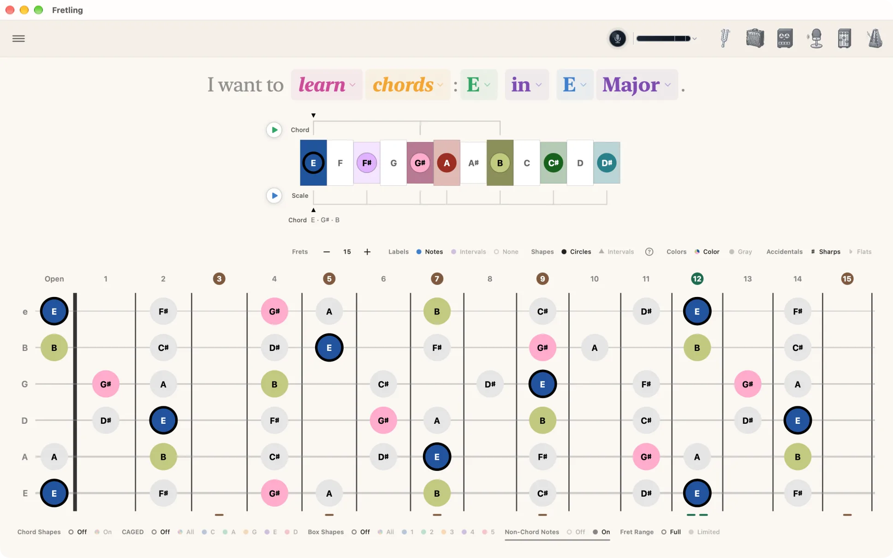
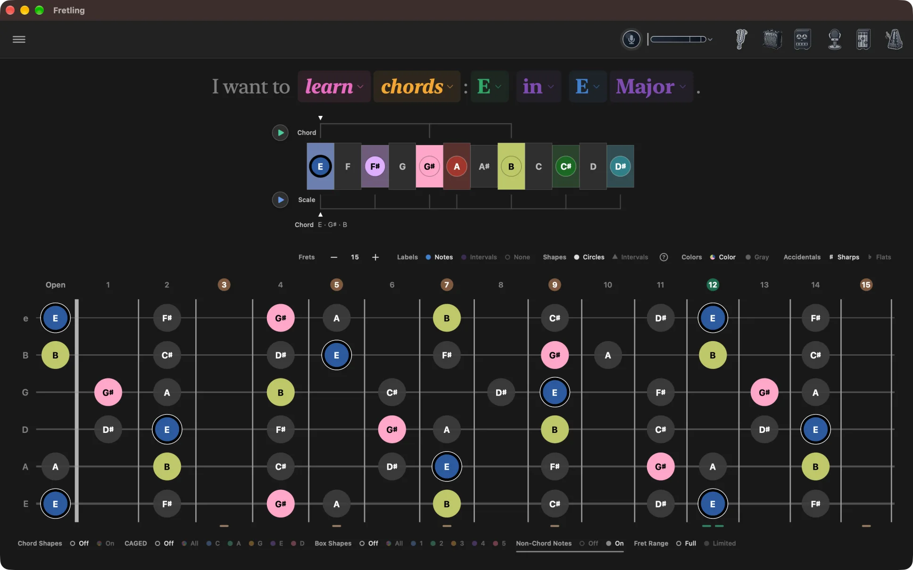
The Chord Atlas
The Atlas is Fretling's chord catalog, and it is free in every mode. Open it by tapping the chord in the sentence — the chord's name in Chords mode, or the chord slot at the end of the Scales sentence. On the Mac it opens as a panel under the chord; on iPad, as a sheet.
How it is laid out: across the top, the chord's name and two key caps — in C Major and without a key — which flip the same choice as the sentence's in. Below them, the twelve roots, laid out like a keyboard. Then the chord types in eight families — Triads, Sixth/Add, Sevenths, Suspended, Extended, Altered, Symmetric and Other — each card showing the chord's name, its type and its formula (1 ♭3 5 ♭7). At the bottom sits a tray that starts folded: the chord, Hear, and where the chord sits in the key (In key · vi). Unfold it with the arrow by the name for Add, Alter and Omit (add9, ♭5, no3 — a chip that would not change the chord is dimmed) and Slash, a bass note under the chord (C/E).
Every pick is live: a tap commits at once — the neck and the sentence follow, the chord sounds, and the Atlas stays open, so you can walk through chords by ear without dismissing the sheet and reopening it each time. Root, card, modifier and bass picks all play. A family tap opens the family without a sound, and picks its first type if your chord is not in it. Hear plays the current chord again.
It knows your key. With a key, each root carries the Roman numeral of its chord in the key on a rail under it — the key's roots solid, borrowed ones lighter, the rest dashed outlines — and chords the key owns or borrows sort to the front of each family. A card says so when it differs from its root: Outside key, Borrowed · V/V. In a Major or Minor key a secondary dominant seventh reads Borrowed · V/V and a chord taken from the parallel key reads Borrowed · iv; in the other scales a chord is in the key or outside it. Nothing has to be switched on, and none of it is behind the Pro unlock.
Chords without shapes. Eleven types have no fingerings in the chord library — 7sus2, maj7sus4, 9sus2, 9sus4, m13, 7♭13, whole-tone, diminished-scale, quartal, quintal and dimMaj7. While Chord Shapes is on, the Atlas leaves them out; turn it off and all 57 types are listed, those eleven marked No shapes.
From the keyboard: ← and → move along a row, ↑ and ↓ jump between the roots, the families, the cards and the tray, Return picks, and Esc closes.
It follows the marker display bar. Labels, Colors and Accidentals reach the Atlas the way they reach the neck, so a chord spelled with flats on the fretboard is spelled with flats here. The one deliberate difference: with Labels set to None the Atlas keeps its chord names, because a catalog with no names on it is not a catalog.
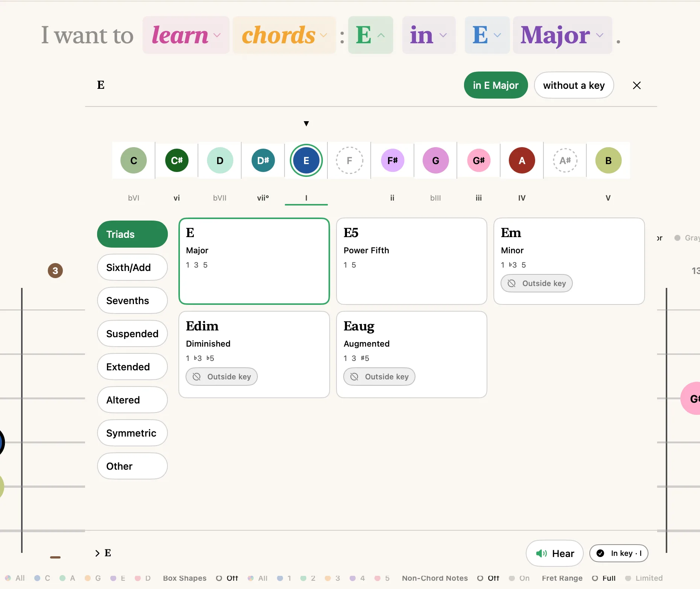
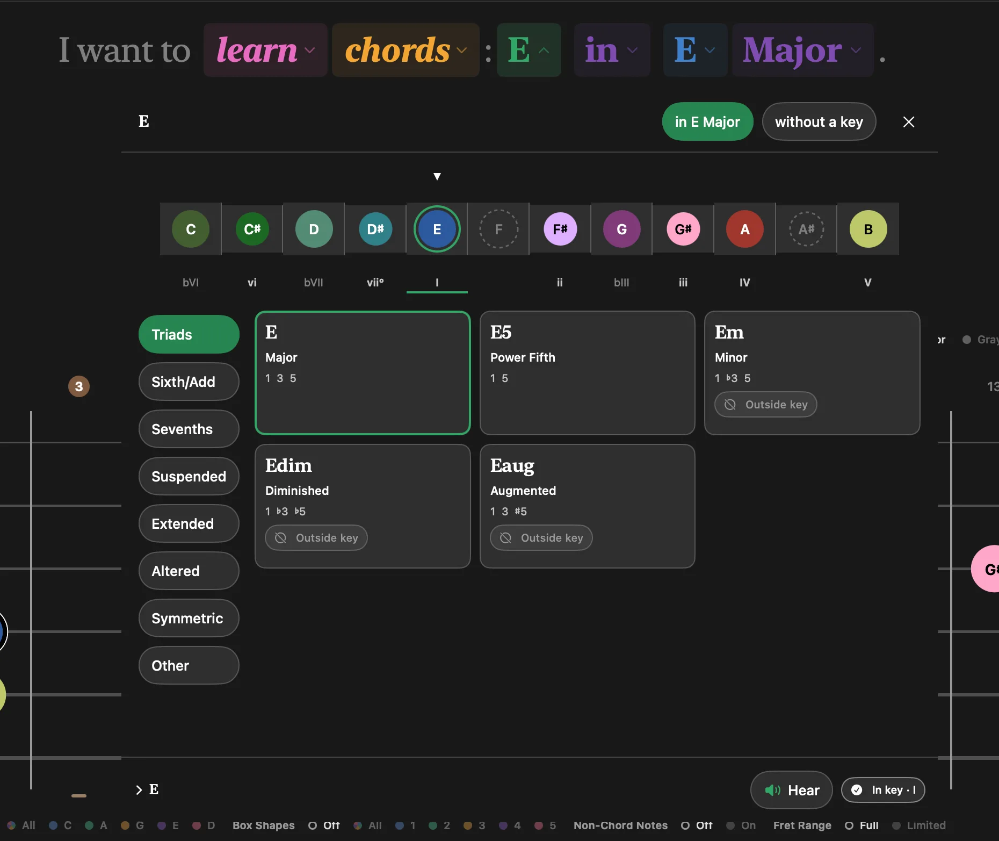
Triads
Purpose: practice three-note voicings on specific sets of strings.
What you pick: a root note and a triad type — Major, Minor, Augmented, or Diminished. The sentence reads “I want to learn triads in C Major”, but the last word is the triad type, not a key: it means the C major triad — C, E and G — and nothing else, so no scale is drawn. Fretling remembers the triad type separately from the scale, so coming over from scales in A Minor can read triads in A Major until you pick Minor here. The root is the one every mode shares: changing it here changes it in Scales and Chords too.
On the fretboard: every tone of the triad is marked across the whole neck, with its root ringed. The Strings group under the neck narrows the view to one set of three neighboring strings, numbered from the thinnest — 123 is G, B and high e; 234 is D, G and B; 345 is A, D and G; 456 is low E, A and D. It starts on All. On one string set the shapes climb the neck in order: root position, first inversion, second inversion, then root position again an octave up. Fretling draws them but does not label which is which.
Triad lines: with a string set picked, turn on Show Triad Lines in Settings → Fretboard and a line joins each shape one hand can hold. The lines need a string set: with Strings on All the switch draws nothing.
CAGED and Box Shapes work here too, laid over the triad. CAGED draws the major grips for a major triad and the minor grips for a minor one; augmented and diminished triads have no CAGED grip, so the group leaves the row for them. Box Shapes draws the five boxes of the major pentatonic on your root for a major or augmented triad, and of the minor pentatonic for a minor or diminished one — so for augmented and diminished the boxes hold the plain 5th, not the triad's own. Box Shapes is the selection Scales uses, and CAGED is one selection shared by every mode: pick CAGED A here and Scales, Chords and Progressions show the A shape too.
Hearing it: the timeline above the neck lays out the twelve notes from the triad's root with its three tones filled and joined by the Chord rail. Its round Chord transport holds the triad until you press it again — close together in root position on the chord pad, not the shape you are looking at. Changing the root or the triad type stops it.
Use it to: learn a triad on one string set, then move the same shape up the neck and across to the next set.
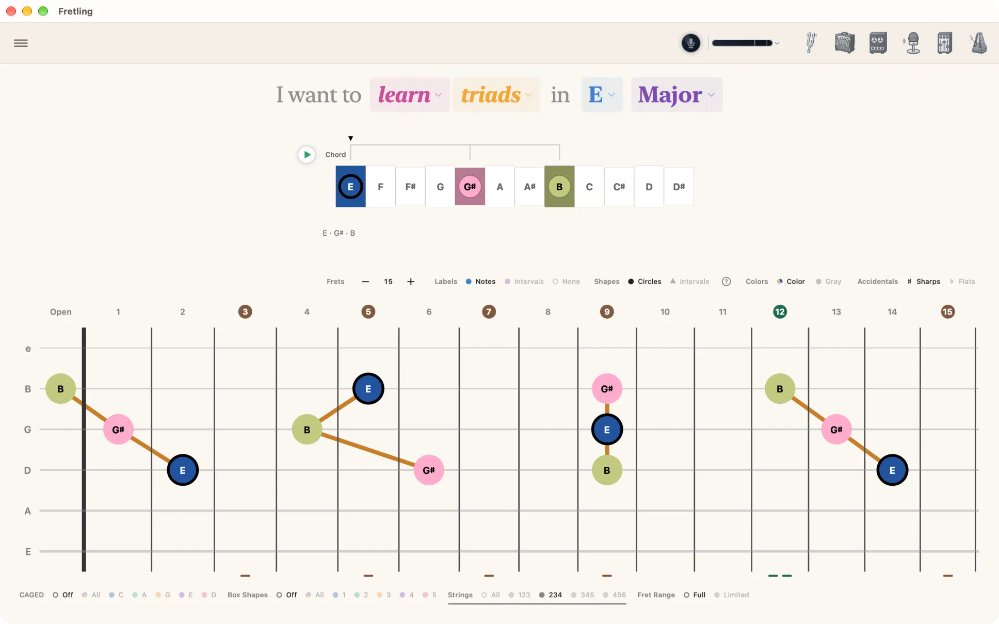
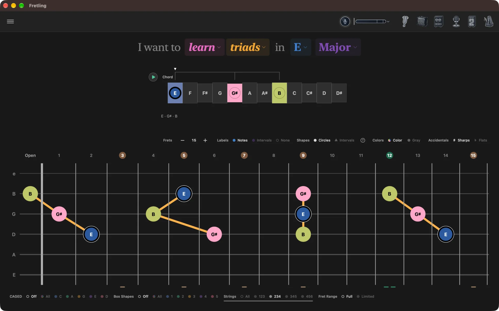
Identify a chord
Purpose: the reverse lookup — you have a shape under your fingers and want to know what it is called.
Pick identify as the verb in the header and the sentence becomes “I want to identify a chord in C Major”. The word in is a dropdown: pick without a key and it reads “… a chord without a key”. Fretling remembers the choice. The key is the one learn uses, so changing it here changes it there. With a key, the card adds one line saying what the chord is in that key — vi in C Major, iv in C Major (borrowed), Outside C Major. The key changes nothing else: not which names Fretling suggests, not their order, and not the neck.
Giving Fretling the notes
- Tap them onto the neck. The neck starts empty; the first time, a tip above it says Tap the neck to place notes; tap again to remove. Tap a fret to place a note — Fretling plays it once — and tap it again to remove it. Each string holds one note, as a fretting hand does, so tapping another fret on the same string moves the note there. Two different notes are enough for an answer. A placement toolbar under the neck gives you Undo, which steps back one change at a time, Clear, and a running count of placed notes.
- Play them. Pro Press Listen in the placement toolbar — it opens Live Detect, raises its panel so the Stop control is reachable, and starts it listening. Play the chord. Once Live Detect has named it, the button becomes Capture what I played: press it and that chord is placed on the neck, in place of whatever you had put there (Undo brings that back). What lands is the chord Live Detect named, voiced Fretling's way from the bass up — not your fingering, so move notes afterward if your shape was different. Live Detect names triads, power chords, sus2 and sus4, sixths, and the common sevenths; a 9th or an add9 comes out as the nearest of those or not at all, so tap richer chords in. The same move is on Live Detect's own panel as Send to fretboard. Without Pro the button shows the unlock sheet and the microphone never opens.
Reading the results
The card above the neck answers as soon as two different notes are placed. It gives one name, large — C, C/E, Am7, Cmaj7no5 — and beside it, when there is something to explain, why: 1st inversion — E in the bass., 5th (G) omitted — add G to complete Cmaj7., C with an added F♯. Under it, your notes from low to high, each with its interval from the chord's root, the lowest marked bass. On the neck the lowest note is ringed, because the bass often decides the name.
The same notes are often more than one chord. When they are, a Readings row lists the other names, up to five in all, best first. After a complete match it lists only other complete names: A, C, E and G over an A read Am7, then C6/A. When the best answer is itself a near miss, or only two notes are placed, near misses join the list — Ano3, Asus2. Tap a reading and the card and the neck's colors follow it, with a line saying why it ranks lower: Same notes as Am7 — A in the bass favors Am7.
From a reading you can:
- Hear it — play that chord on your Playback instrument: Fretling's own voicing of the name, not the notes you placed.
- Show voicings — draw up to three playable fingerings for that name on the neck.
- Open in Chord Atlas — leave identify for learn's Chords mode, with this reading as the chord. The Atlas itself stays closed; tap the chord in the sentence to open it.
Your placed notes stay put when you switch to learn and back, and clear when you quit.
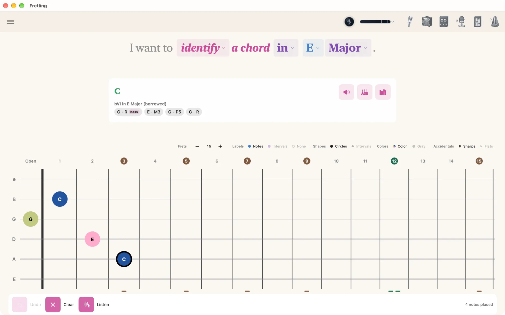
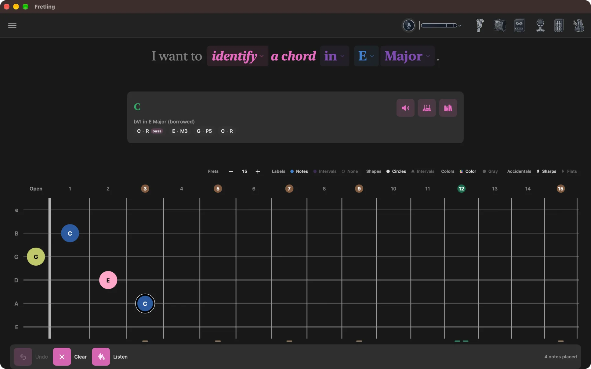